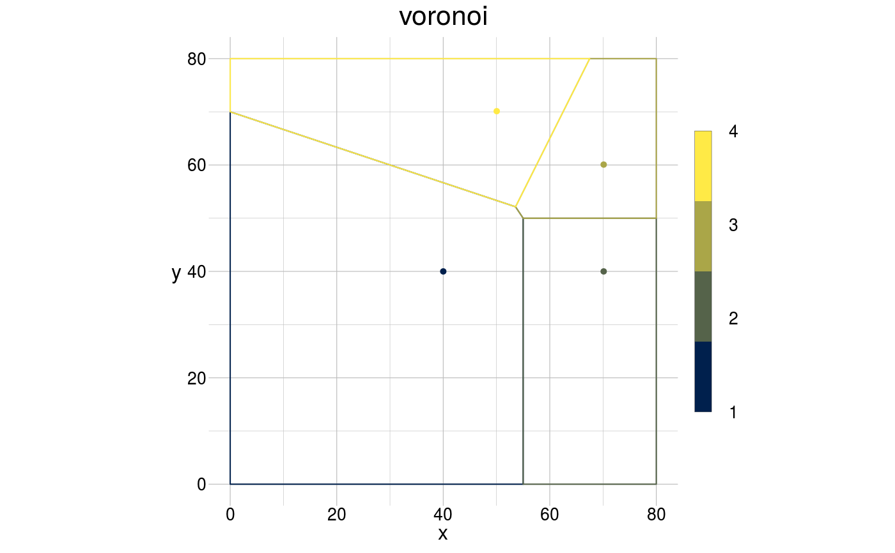
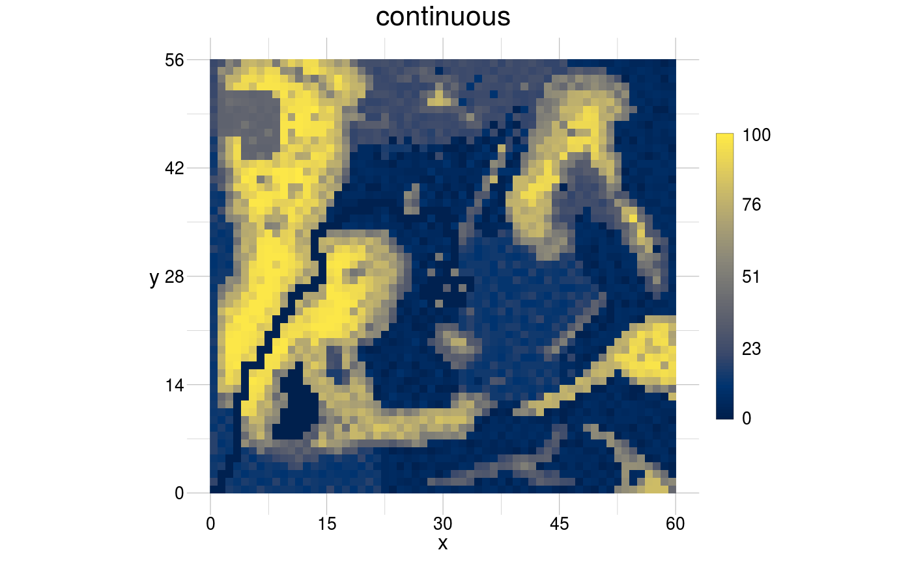

Create a voronoi tiling geom
gs_voronoi(anchor = NULL, window = NULL, features = 3, sketch = NULL, ...)
| anchor | [ |
|---|---|
| window | [ |
| features | [ |
| sketch | [ |
| ... | [various] |
An invisible geom.
Other tilings:
gs_tiles()
# 1. create voronoi polygons programmatically coords <- data.frame(x = c(40, 70, 70, 50), y = c(40, 40, 60, 70)) window <- data.frame(x = c(0, 80), y = c(0, 80)) aGeom <- gs_point(anchor = coords, window = window) visualise(voronoi = aGeom)# \donttest{ # 2. sketch a voronoi polygon by clicking into a template gs_voronoi(sketch = gtRasters$continuous) %>% visualise(tiles = ., new = FALSE)#>#> Error in deldir(as.data.frame(tempAnchor), rw = c(min(theWindow$x), max(theWindow$x), min(theWindow$y), max(theWindow$y)), suppressMsge = TRUE): There is at most one point, data or dummy, inside #> the given rectangular window. Thus there are #> insufficiently many points to triangulate/tessellate.# }